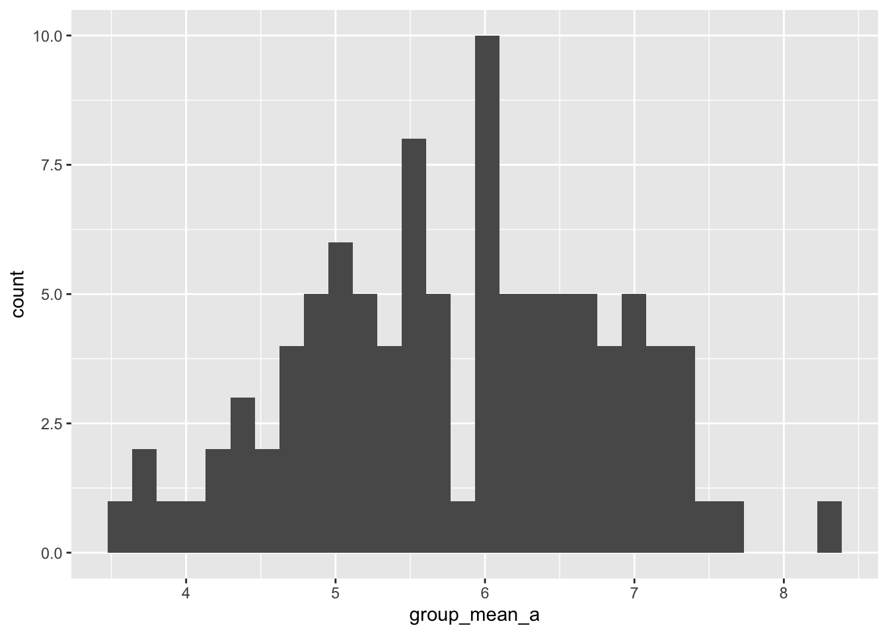
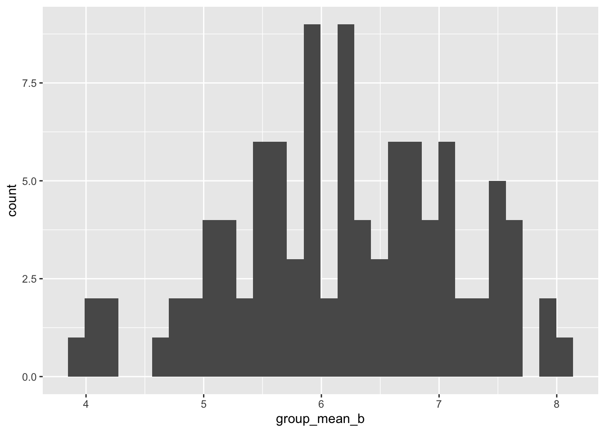

── Attaching core tidyverse packages ──────────────────────── tidyverse 2.0.0 ──
✔ dplyr 1.2.0 ✔ readr 2.2.0
✔ forcats 1.0.1 ✔ stringr 1.6.0
✔ lubridate 1.9.5 ✔ tibble 3.3.1
✔ purrr 1.2.1 ✔ tidyr 1.3.2
── Conflicts ────────────────────────────────────────── tidyverse_conflicts() ──
✖ dplyr::filter() masks stats::filter()
✖ dplyr::lag() masks stats::lag()
ℹ Use the conflicted package (<http://conflicted.r-lib.org/>) to force all conflicts to become errors
set.seed(1000)
PART 1: Using a for loop, write a function to calculate the number of zeroes in a numeric vector. Before entering the loop, set up a counter variable counter <- 0. Inside the loop, add 1 to counter each time you have a zero in the vector. Finally, use return(counter) for the output.
zeroes <-function(myvec =sample(x=rep(0:4, times =10), size =10)) { counter <-0for(i in1:length(myvec)){ num <- myvec[i]ifelse(test = num ==0,yes = counter <- counter +1,no = counter <- counter ) }return(counter)}set.seed(500)zeroes()
[1] 2
PART 2: Use subsetting instead of a loop to rewrite the function as a single line of code.
PART3: Write a function that takes as input two integers representing the number of rows and columns in a matrix. The output is a matrix of these dimensions in which each element is the product of the row number x the column number.
PART 4: In the next few lectures, you will learn how to do a randomization test on your data. We will complete some of the steps today to practice calling custom functions within a for loop. Use the code from the March 31st lecture (Randomization Tests) to complete the following steps:
#a. Simulate a dataset with 3 groups of data, each group drawn from a distribution with a different mean. The final data frame should have 1 column for group and 1 column for the response variable.set.seed(100)groups <-rep(c("A", "B", "C"), each =10)response <-c(rnorm(n =10, mean =1),rnorm(n =10, mean =7),rnorm(n =10, mean =10))df1 <-data.frame(group = groups,response = response)#b. Write a custom function that 1: reshuffles the response variable, and 2: calculates the mean of each group in the reshuffled data. Store the means in a vector of length 3.library(dplyr)shuffler <-function(df = df1){ reshuffled <-sample(df1$response, size =nrow(df)) df2 <-data.frame(groups = df$group, response = reshuffled) summary <- df2 |>group_by(groups) |>summarize(meanResponse =mean(response)) means_save <- summary <- summary$meanResponsereturn(means_save)}shuffler()
[1] 6.831818 4.971800 6.282974
print(shuffler())
[1] 6.792594 6.032425 5.261573
#c. Use a for loop to repeat the function in b 100 times. Store the results in a data frame that has 1 column indicating the replicate number and 1 column for each new group mean, for a total of 4 columns.library(ggplot2)newdf <-data.frame(replicate =1:100,group_mean_a =rep(NA, 100),group_mean_b =rep(NA, 100),group_mean_c =rep(NA, 100))for(i in1:100){ temp =shuffler() newdf$group_mean_a[i] = temp[1] newdf$group_mean_b[i] = temp[2] newdf$group_mean_c[i] = temp[3]}#d. Use qplot() to create a histogram of the means for each reshuffled group. Or, if you want a challenge, use ggplot() to overlay all 3 histograms in the same figure. How do the distributions of reshuffled means compare to the original means?histogram_a <-ggplot(data = newdf) +geom_histogram(mapping =aes(x = group_mean_a ))histogram_b <-ggplot(data = newdf) +geom_histogram(mapping =aes(x = group_mean_b ))histogram_c <-ggplot(data = newdf) +geom_histogram(mapping =aes(x = group_mean_c ))histogram_a
`stat_bin()` using `bins = 30`. Pick better value `binwidth`.

histogram_b
`stat_bin()` using `bins = 30`. Pick better value `binwidth`.

histogram_c
`stat_bin()` using `bins = 30`. Pick better value `binwidth`.